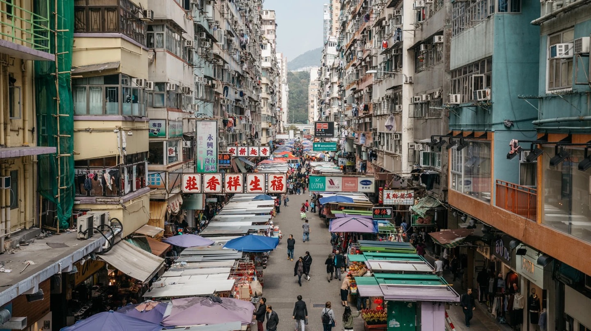

Hong Kong Tourism Board
Located north of Tsim Sha Tsui in Kowloon, Mong Kok is Hong Kong shopping at its liveliest.
Easily reached by bus or MTR, Mong Kok offers both traditional streets markets along with more recent hip stores catering to a younger, more niche crowd.
|  | |
| Mong Kok in Kowloon is known for its shopping from traditional markets to hipster stores | |